Linear Regression (cont.)
NRES 710
Last compiled: 2024-07-29
Review
This week we will continue to explore linear regression by talking about assumptions of regression – and in fact these are important assumptions of many other statistical tests. And then we will discuss how to use linear regression models to make predictions.
Most important thing we have learned so far:
- \(Y_i = \beta_0 + \beta_1x_i + \epsilon \sim N(0, \sigma)\)
There are many assumptions that this regression test makes! But we will focus on what are considered the five most important of these assumptions.
Assumptions
What are the assumptions of statistical test and how do they influence your results?
The first thing you need to know about assumptions of statistical tests (regression, t-test, ANOVA, other tests we will cover…) is that the tests are robust to violations of assumptions.
- Robust means that: if an assumption is violated, it very rarely influences the results we get from the analysis (e.g., slope).
- We’ll talk about which of the assumptions influence different parameters…
- But for most parameters, if the assumptions are violated it does not influence the slope.
- Assumption violation may influence the standard deviation, but this is not often reported.
- Violations cause the p-value to increase. This means that violations are likely to be conservative. Since we want to avoid committing Type I error (rejecting the null when in fact it is true), then if assumption violation causes p-values to increase then we are less likely to commit Type I error.
A general rule (axiom) in statistics is that: the more assumptions a test makes, the more powerful it is (power = p-values).
We often use statistical tests that make assumptions. Often, these assumptions are true. And since we make more assumptions, we are more likely to detect a significant effect. If these assumptions are valid.
I often don’t care too much about assumptions – because they are often met due to our study design, the specific analysis we chose, and most analyses are robust to violations of assumptions. But, reviewers do. Reviewers will try to find something wrong with your paper. They will try to find something wrong and jam up the process. So it can be useful to carefully document how you examined for violations of assumptions in your analysis. This gets tedious, but is part of the ‘statistical ritual’ of our field… (Or maybe it shouldn’t be. Johnson [1999] made suggestions that our statistical ritual leads to bad practices, and we will read another paper to this effect at the end of the semester.)
But as for me, again, I don’t care too much about these assumptions, because most analyses are robust to violations of assumptions.
Five regression assumptions
There are 5 assumptions to linear regression. I put the equation up on the board again because most of these assumptions are indicated in the equation, either explicitly or implicitly.
Continuous Y
Should be continuous; not a count, like a number. But… if it is a count, that’s potentially okay, because regression/ANOVA are robust to violations of assumptions. We don’t really need a test for this – if you collected the data, you should know whether it is continuous or not!
Note: linear regression also assumes that your X-variable is continuous… but we can relax this assumption, and we will do so next week when we explore t-tests! More on this soon.
If you Y is not continuous, it will not influence your slope, but it might increase your p-value.
Error is normally distributed
- Very clearly indicated in the equation! Important and something that a lot of people get wrong. Some folks say that X-variable has to be normally distributed, continuous, etc. – but nope. Others assume that your Y-variable has to be normally distributed. Nope! This assumption relates to the error around the Y-variable.
For example: consider the data in the left graph. There is a gap in values for the middle-range of X-values. If we examine this as a frequency histogram (middle graph), this is not a normally-distributed y-variable; it is bimodally distributed! This is okay. When we run this regression, we have not violated any assumptions, because the error is normally distributed around the line.
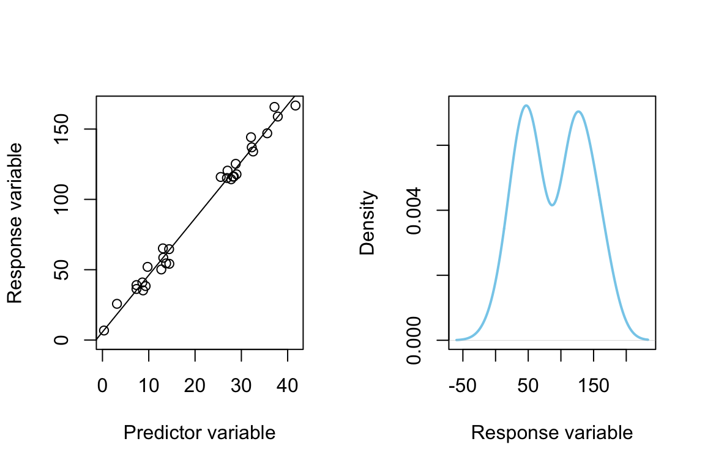
Then why are people always asking if the Y-variable is normally distributed…? This is because if you look at the distribution of the y-data and it appears normal, the residuals will almost always be normal when you run the analysis.
But, if you run a histogram and your y-data are not normal, this does not necessarily mean that your error will also not be normal. To really know if the assumption is violated, you need to run the regression and examine whether the residuals are normal (third graph).
If your error is not normally distributed, it’s not going to influence your slope – but it might increase your p-values a little bit.
Linear relationship between X and Y
This one is important. This is implicit in our linear model equation.
It assumes that there is a single parameter – the slope – describing the relationship between X and Y.
The reason why I think this is important is because so often in ecology/natural resource management I see people obtaining two continuous variables and immediately running a regression model – without ever considering whether their data have a linear relationship. They don’t even think about it.
This is a problem, because in ecology… many processes of interest are non-linear!
Example: mesocosm experiment. We want to understand the effect of crayfish predators on prey fish. Does fish abundance decrease and predatory crayfish increases?
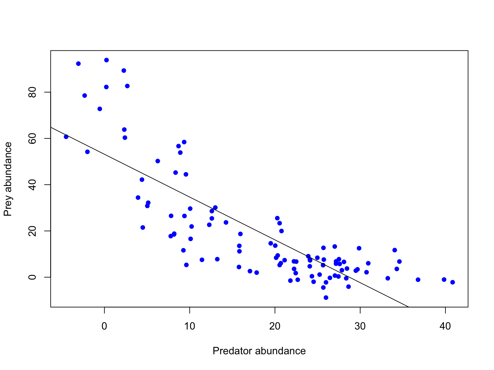
This very clearly violates the assumption of linearity! We can fit a better statistical model – one that does not assume linearity – which can better help us measure this relationship and explain it to the scientific community!
So, don’t assume there is a linear relationship between X and Y – examine this, verify, and adjust your model as needed.
If the relationship is not linear, this will alter your slope! We are measuring something that is not linear an
Homoscedasticity
homo = same; scedasticity = variance, noise, error, etc.
Implicit in our equation: - \(\epsilon \sim N(0, \sigma)\)
Constant variance: error does not change not matter what the X and Y values are.
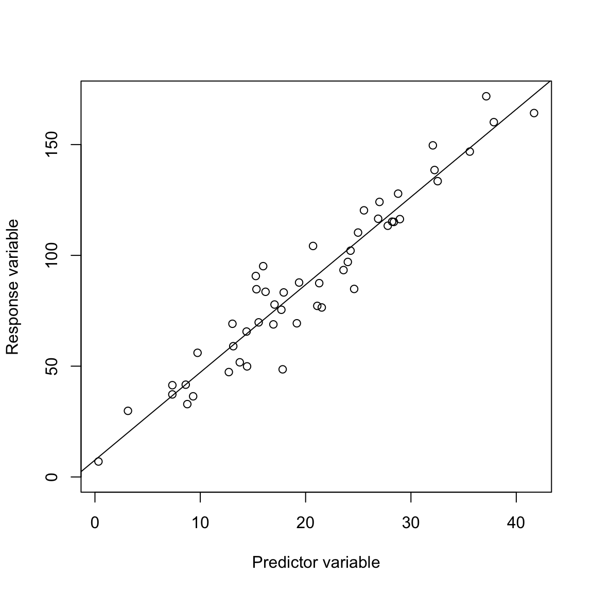
We can visualize homoscedasticity by imagining/drawing normally distributed bell curves amidst our data along the regression line…
An example of heteroscedasticity is any case where your variance changes. This commonly occurs in ecology when we count animals. For example, when we are electofishing for fish in a river, areas with no fish have little variance; areas with many fish have high variance! It creates this cone-shaped data.
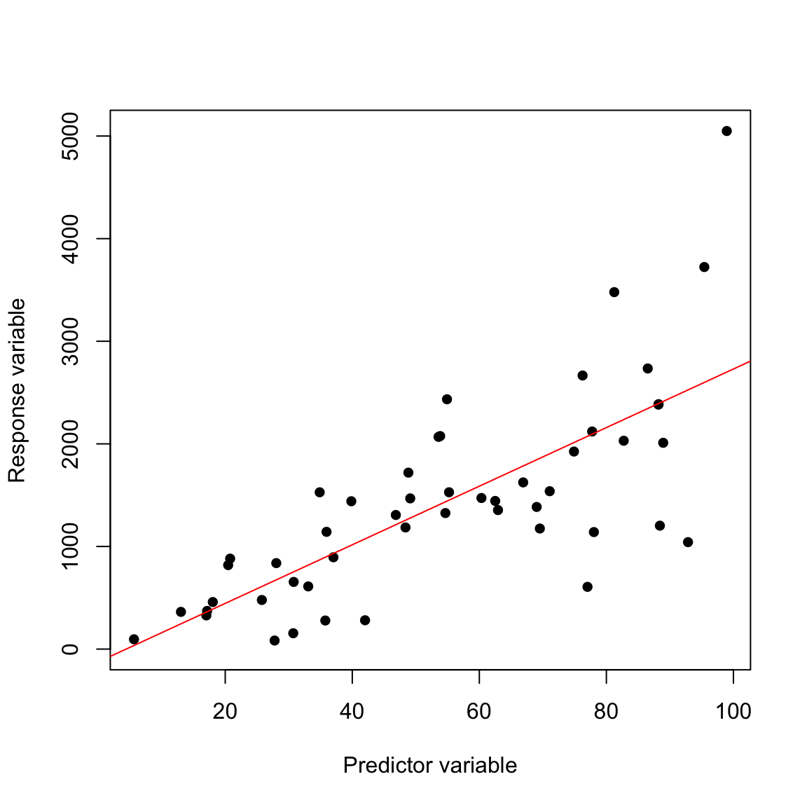
We can visualize heteroscedasticity by imagining/drawing normally distributed bell curves amidst our data along the regression line, and the bell curves get wider as we increase along X.
Heteroscedasticity could also happen in a non-linear way.
Q: Will heteroscedasticity influence your slope? No.
We can account for heteroscedasticity in our model by adding a weighting paramter to the error component: \(\epsilon \sim N(0, \sigma * y)\) would allow for error to increase with \(y\)!
Independent samples
When people say that the x-variable is the ‘independent variable’, this is what they really mean! Your samples should be independent of eachother and there should be no autocorrelation.
Example: measuring pollution in water samples every 10 m down the middle of a river from a chemical plant. These data will have autocorrelation, because pollution can’t change that much from sample to sample.
Q: How might you eliminate or minimize autocorrelation? Maybe by increasing distance between samples – measure every kilometer. This decreases autocorrelation, but also decreases sample size. Tradeoff…
I personally don’t worry too much about autocorrelation, because often when you fix it/account for it, nothing changes. If you had a strong slope and p-value with one test, you will likely get a strong slope and p-value with another test.
Consider these autocorrelated data:
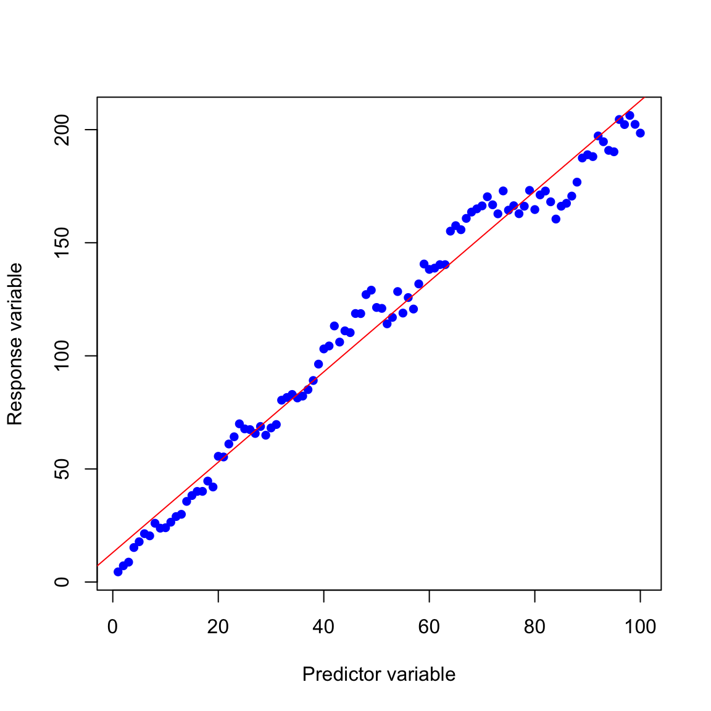
Instead of our points bouncing around the line, they tend to follow eachother.
This will not affect our slope, and it probably won’t affect the p-value too much (would only increase). So again, linear regression is robust to violation of this assumption.
Two types of autocorrelation issues: spatial and temporal autocorrelation. We will discuss how to deal with this down the road. But again, it’s not too big of a concern.
Many things are autocorrelated in nature. Animal movements, for example! Is this a problem?
Maybe not. This is what animals do – they move! Try to get big sample sizes.
Evaluating assumptions w/ graphs
Statistical tests exist to statistically test for these assumptions. These are p-value generating tests. There are some consequences of this.
- If you have a small sample size, the assumption will never be violated! Because of the relationship between sample size and p-values that we have identified in previous classes.
- Conversely, if you have a really large sample, the assumption will always be violated!
So, for these reasons, I don’t like these tests, and I don’t recommend using these tests.
Instead, what I do I look at my data graphically! And I will teach you to do this also. We will visually examine our data to identify whether our data meet these assumptions or not. If it has been violated, we will see this. If we can see the assumption has been violated, then we now know this.
Useful rule of thumb:
- If you can’t see it, it doesn’t exist, and you assume there isn’t one.
- If you can see it, then an assumption may be violated, and then it’s our decision to do something about it or not.
We have four main assumptions, and we will use four graphical approaches to examine whether these assumptions are met.
| Assumption | X-Y Scatterplot | Residuals Scatterplot | Histogram of Residuals | Autocorrelation Function (ACF) |
|---|---|---|---|---|
| Normality | ||||
| Linearity | ||||
| Homoscedasticity | ||||
| No autocorrelation |
X-Y Scatterplots
This first graph shows data where none of the assumptions are violated.
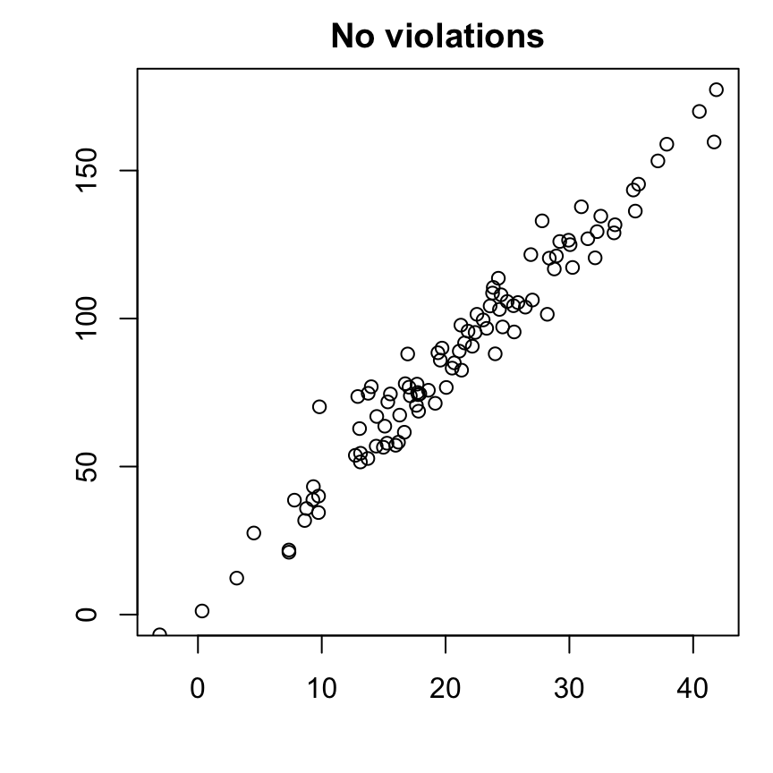
- Data are very clearly linear.
- Data appear to be normally distributed around the line. Most are close to the line, but some are out in the tails.
- Does not appear to be any autocorrelation.
- Does not appear to be any heteroscedasticity.
This is how your data should look!
This second graph shows data were the assumption of error normality is violated.
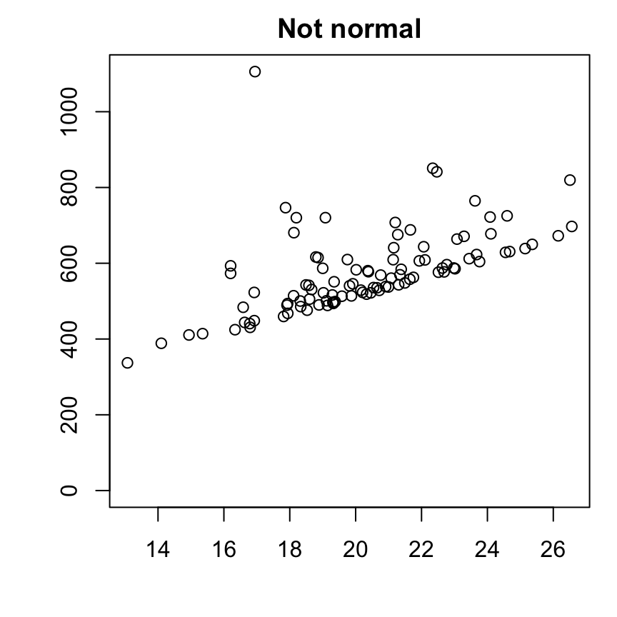
We can see that normality is violated because there are no tails below the line!
Q: Has this influenced the slope? No. It would influence the intercept (but nobody reports that ever, so no big deal).
This third graph shows data where the assumption of linearity is violated.
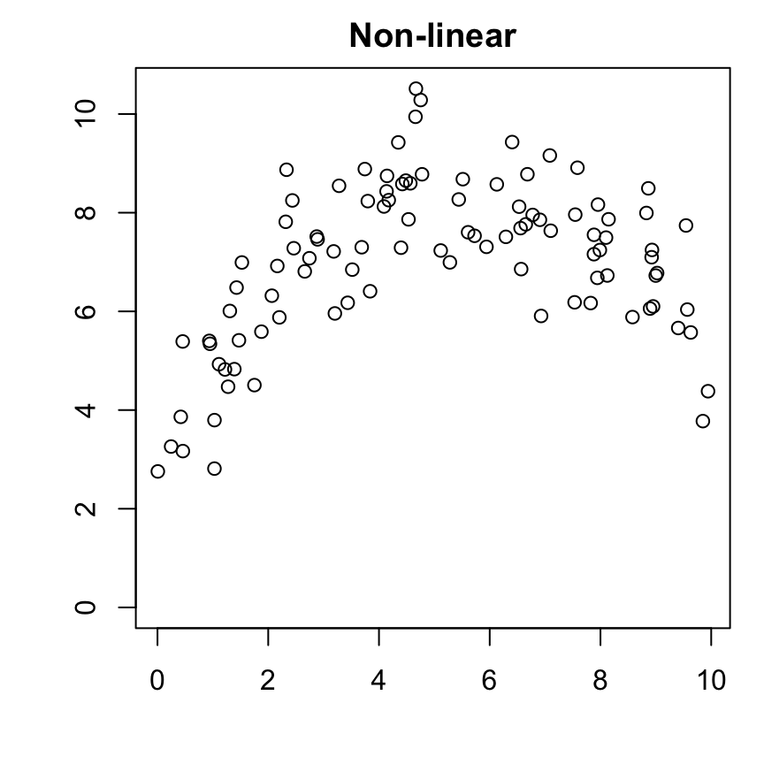
- A linear regression model would not fit these data well, so we would want to seek an alternative approach.
- Note: Some might say that these data are not normally distributed, but it is. Most points are centered on the line, with some out on the tails.
This fourth graph shows data where the assumption of homoscedasticity is violated.
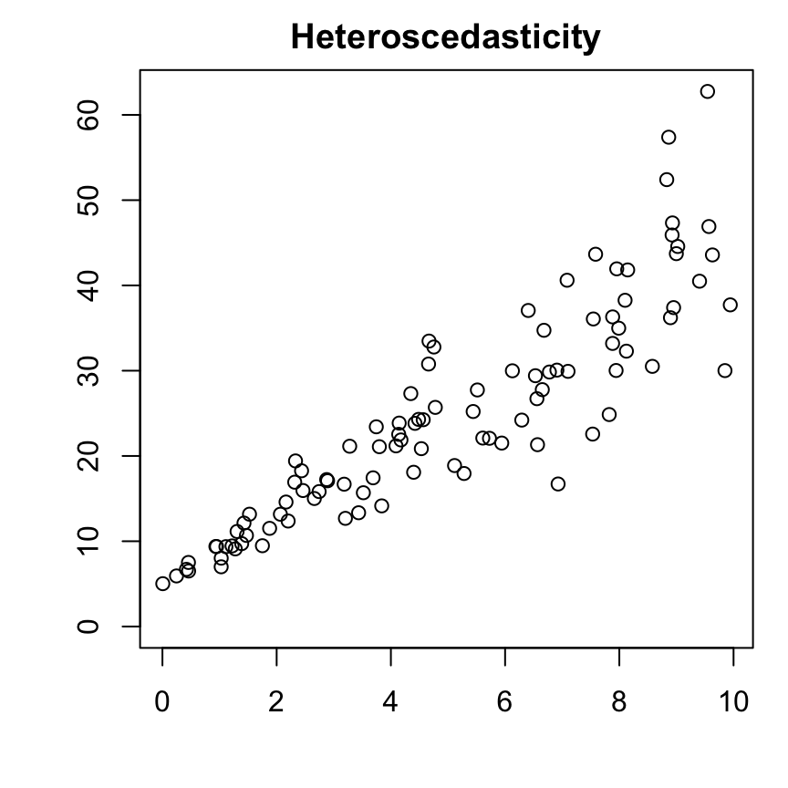
These data are heteroscedastic; as X increases, error increases.
We don’t need a statistical test to know that these data are heteroscedastic.
This last graph shows when the data are not independent and autocorrelation is present in the data.
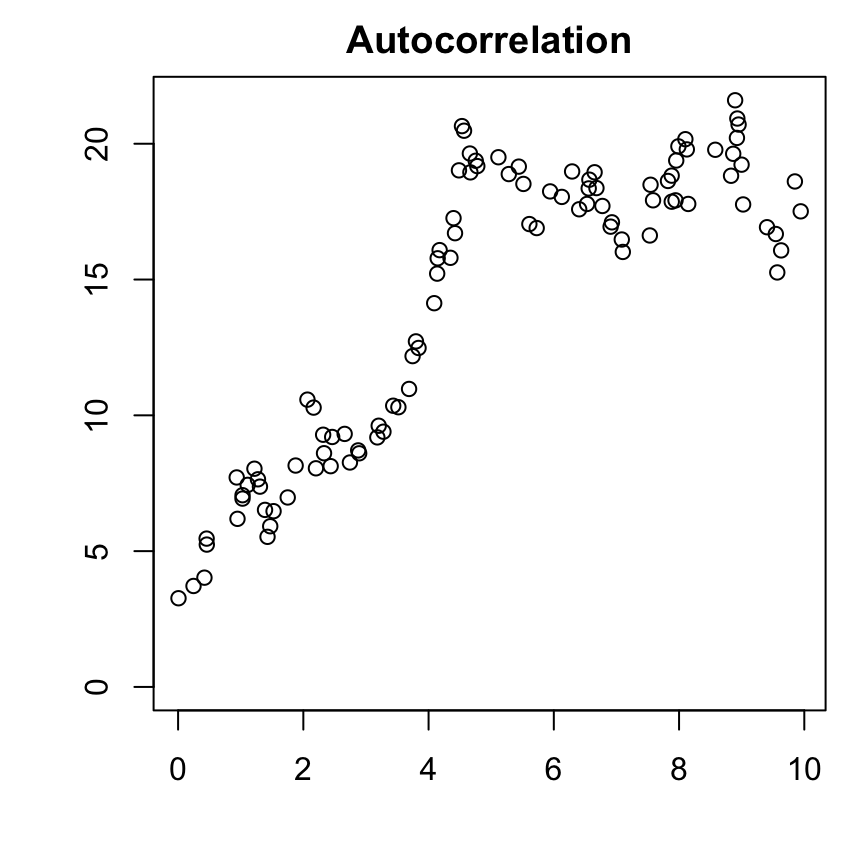
## x error y
## 10 1.111354 2.21685996 7.439568
## 11 1.218993 2.59649944 8.034485
## 12 1.275317 2.09417599 7.644809
## 13 1.306957 1.76096861 7.374882
## 14 1.388061 0.74239323 6.518514
## 15 1.428000 -0.32939800 5.526602
## 16 1.471136 -0.02586936 5.916404
## 17 1.524447 0.42234042 6.471235
## 18 1.750527 0.47534465 6.976398
## 19 1.876911 1.39761211 8.151434
## 20 2.065314 3.44769680 10.578325What do we see here…?
- The errors are similar to each other; i.e., they are correlated to one another.
- The error is not centered on the line, but rather follows itself.
- Two types of autocorrelation; we’ll discuss this in a future lecture when discuss how to fix or model autocorrelation (which requires more complicated models, no ready for this just yet).
Residuals Scatterplot
Residuals scatterplot involve making a graph of:
- X-variable –> X data
- Y-variable –> residual (error)
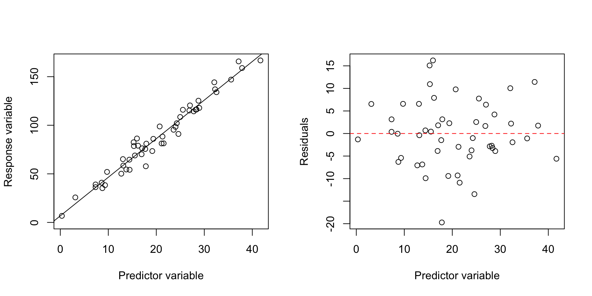
Assuming we had a pretty usual data with X and Y and we fit a regression line (above), we can revisualize that graph with the same X-variable but now with the residuals of Y on the y-axis. We sort of flip that graph, make the regression line be at 0, and then residuals above and below that line are visualized with the Y-variable. This is a ‘residuals plot’.
For example, the residuals plot can be useful when you have a large range of X and Y, and your error is very small:
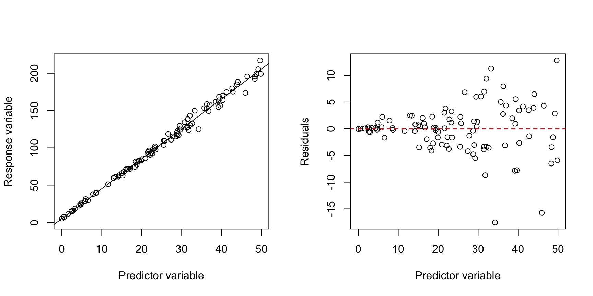
The data look pretty tight around the line in the X-Y scatterplot, but when we look at the residual plot, we see something else. This is common when we have low error – small noise.
Q: What is happening here – what assumption has been violated?
Residuals scatterplots are useful for all four of these assumptions. Here are the four simulated datasets we used for X-Y scatterplots but not visualized using residual scatterplots:
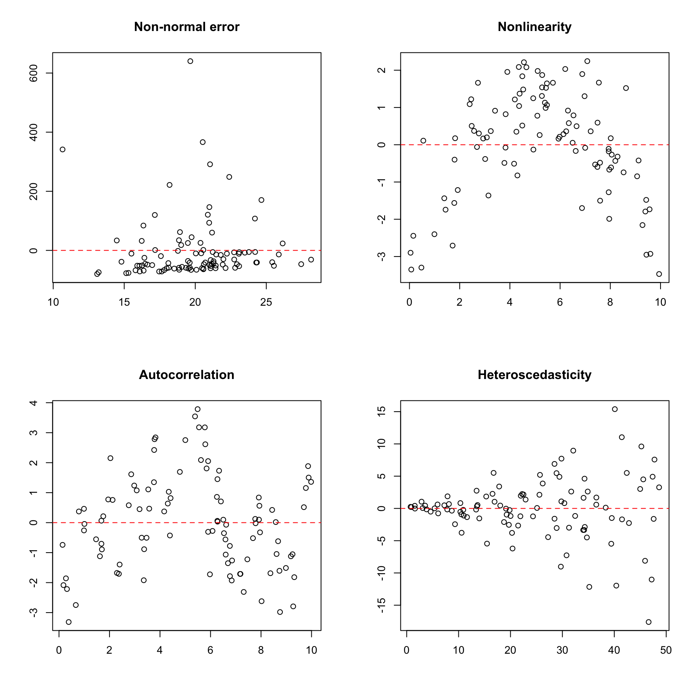
Histogram of Residuals
This is a way to look at the residuals from a global perspective, so it is most useful for looking at normality. Not useful for the others. You can see heteroscedasticity with it (kirtosis), but most useful for checking for normality.
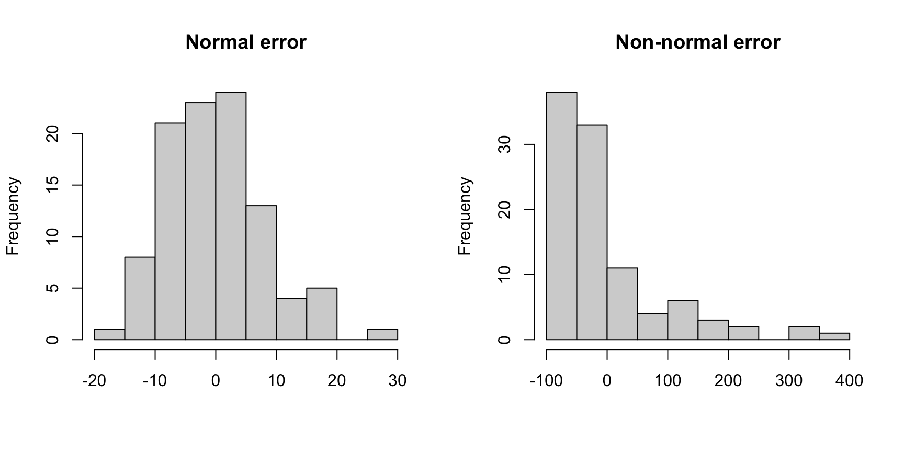
Autocorrelation Function (ACF)
The autocorrelation function (ACF) shows us the correlation for the residuals. It teaches us about the probability that:
- If one point is above the line, what is the chance that the next point will also be above the line?
- Alternatively, if another point is below the line, what is the chance that the next point will also be below the line?
As you might expect, it is best for teaching us whether our data are autocorrelated.
The autocorrelation function, specifically, measures how similar each datapoint is to the other datapoints that are behind it in the dataframe. It compares residuals at different lags in the dataframe. At a lag of zero, we expect high correlation, because we compare each point to itself. At lags of 1 or more, if there is autocorrelation, then the ACF metric will be high and positive (> 0.2) when comparing each a datapoint to points lagged behind it (i.e., high correlation to nearby data in the dataset). If there is no autocorrelation, then the ACF metric will randomly be positive and negative and usually within 0.2 of 0.
Here’s an example using (1) our simulated data that meet all of the assumptions, and (2) the autocorrelated data from above:
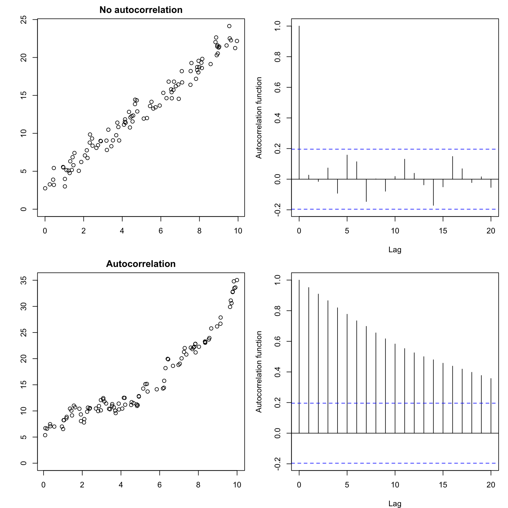
The autocorrelation function can also be useful for non-linearity. For example:
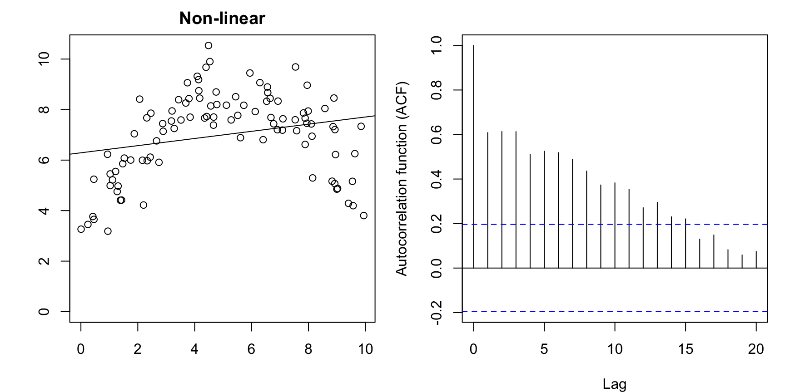
These data are non-linear – and were simulated with no autocorrelation. Data on the left and right regions of the graph are below the line, whereas the middle-most X-data are above the line.
These data are not autocorrelated, but the residuals show evidence of autocorrelation. When we create an ACF plot, it suggests autocorrelation, but this isn’t the case. It is due to the non-linearity. (If we fixed the non-linearity issue, the residual autocorrelation would go away.)
So, if we use an ACF and it shows autocorrelation, we should make sure we don’t have a non-linearity issue.
Summary
| Assumption | X-Y Scatterplot | Residuals Scatterplot | Histogram of Residuals | Autocorrelation Function (ACF) |
|---|---|---|---|---|
| Normality | X | X | ||
| Linearity | X | X | ** | |
| Homoscedasticity | X | X | ||
| No autocorrelation | X | X | !! |